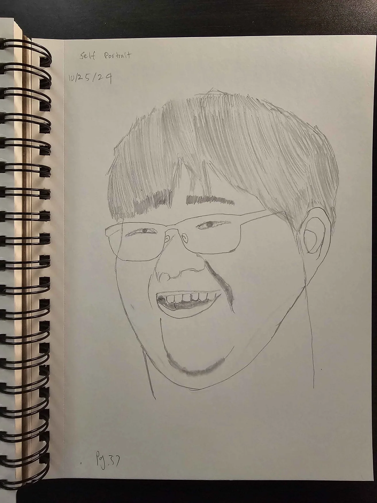
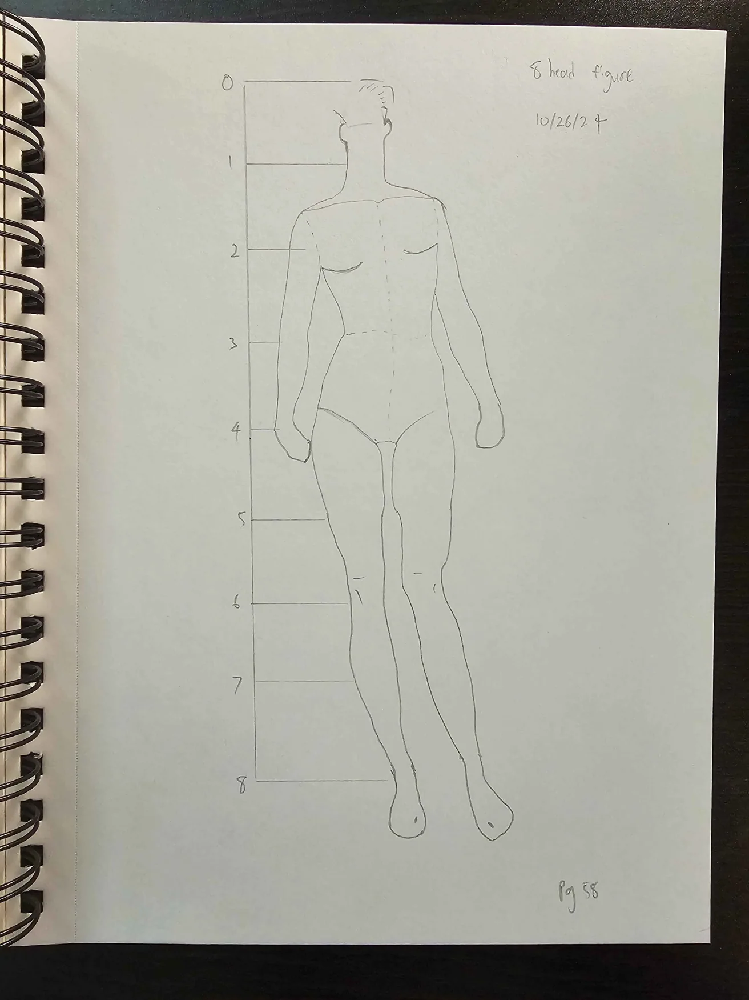
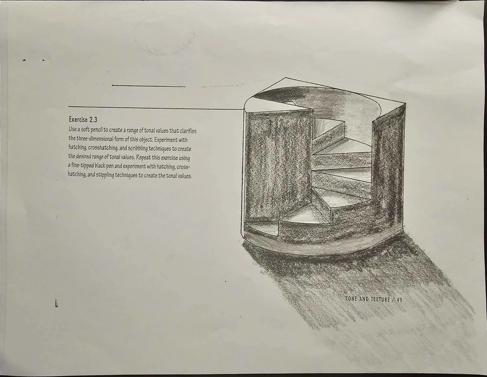
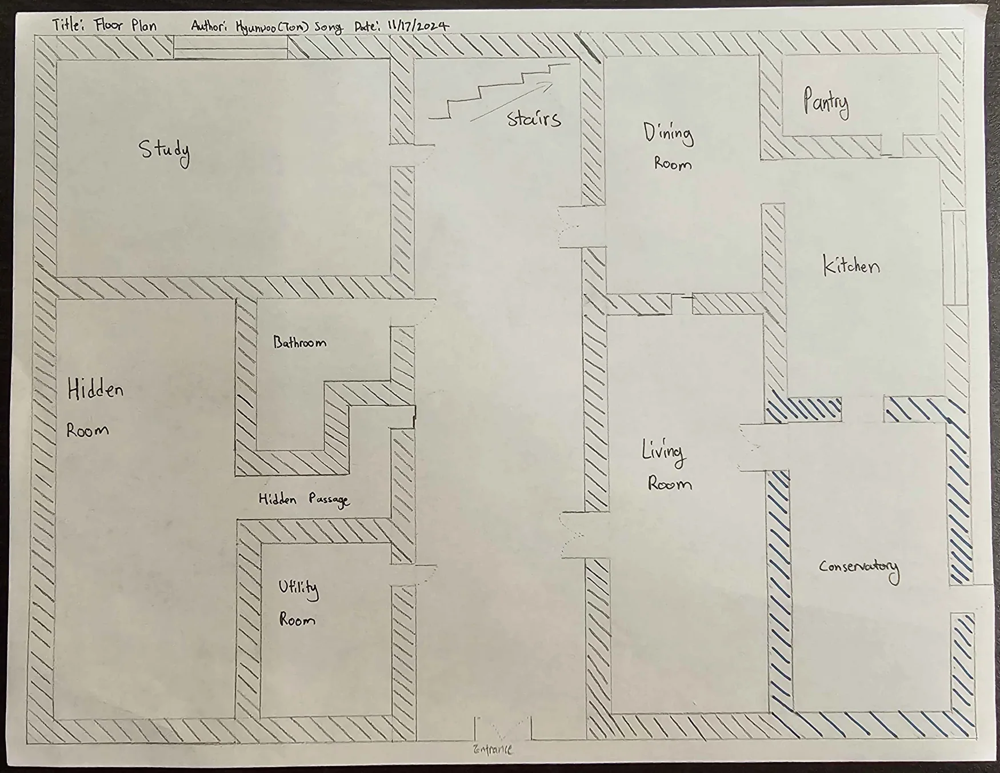
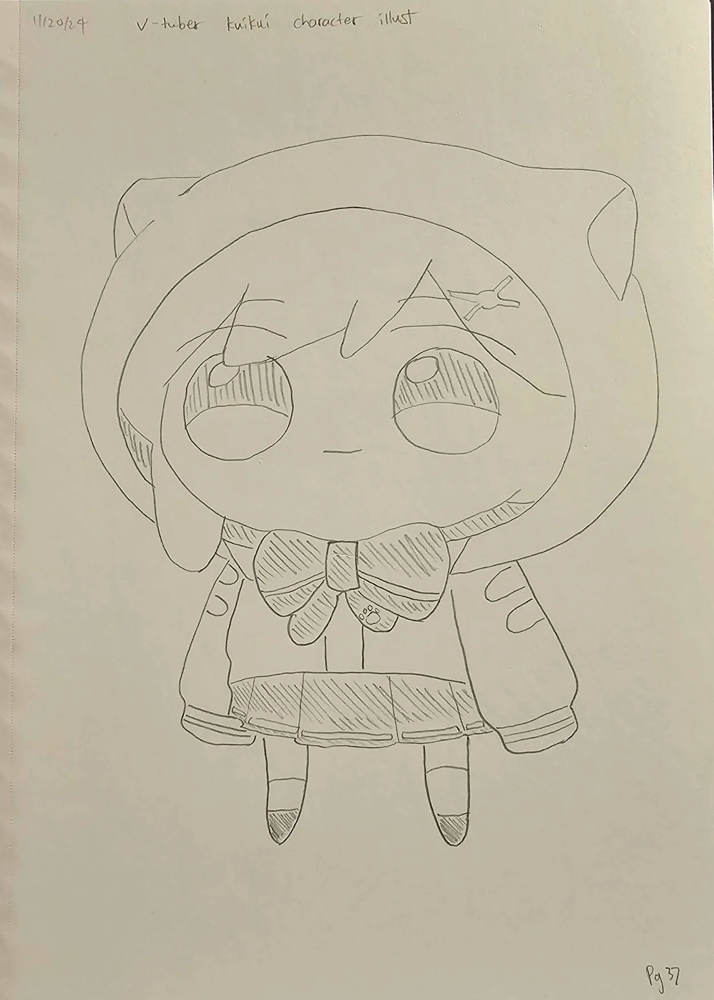

DES 14 · DRAWING · COURSEWORK
Drawing & Visual Studies
A collection of class drawings studying observation, figure, perspective and composition.

01 / DRAWING PRACTICE
Building a foundation in observation
The course archive includes a project drawing, portrait, figure proportion exercises, floor-plan studies, shading and sketchbook work. These are selected examples rather than a complete reproduction of the sketchbook.





ORIGINAL MATERIALS